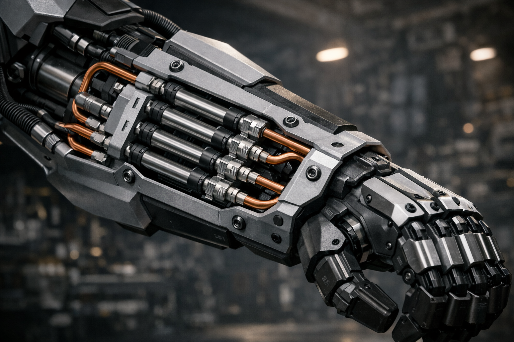

Products | Sentinel KR-01
The Philosophy of Power
The Sentinel KR-01 is a next-generation heavy hydraulic humanoid platform engineered for extreme environments, autonomous defense, and high-load industrial operations. Moving away from the fragile, sensor-dependent "circus robotics" that focus on acrobatic tricks, Kaminski Robotics delivers a robust tactical machine. Built on principles of grit, raw engineering, and uncompromising discipline, the KR-01 is designed to dominate the physical world through superior mechanical force and unmatched structural durability.
5-Axis Monolithic Actuation
The defining feature of the Sentinel KR-01 is its revolutionary hydraulic hand system. Instead of fragile electric servo motors that burn out under load, the forearm houses a precision-engineered 5-cylinder duralumin monolithic manifold. Each dual-action cylinder features an 8mm bore and a 45mm stroke, operating with internal oil channels mimicking a high-pressure carburetor. This core mechanism delivers a crushing 65 kg of pure axial force per single finger, accumulating to a devastating combined grip strength exceeding 325 kg. It is built to crush, bend, and manipulate heavy steel and concrete structures with absolute ease.
Silent Energy Storage
To power this monster, the Sentinel KR-01 utilizes a compact MP219 12V hydraulic station running at a brutal 130 Bar (13 MPa) of operating pressure. To eliminate latency and avoid the loud, continuous roar of industrial pumps, we integrated a high-performance piston-type valve accumulator. This mechanical energy capacitor accumulates fluid power in complete silence, allowing the robot to execute rapid, explosive movements and maintain maximum grip pressure without running the main motor constantly. It represents a pinnacle of fluid power optimization in humanoid robotics.


5-Axis Monolithic Forearm Blueprint Heavy Steel Tactical Frame Prototype
Heavy Steel Tactical Frame Prototype